At a glance
A selfie plus a short questionnaire gives you personalised colours, hairstyles, makeup, accessories, outfits and complete looks. It never scores or judges appearance, keeps privacy first, costs nothing per request to run, and covers both global and Indian fashion.
Overview
MyLookFit is an AI personal stylist for Android. From a selfie and a few questions, it works out face shape, facial features, skin undertone, contrast and a 12-season colour profile. It then composes recommendations across colours, hair, makeup, accessories and outfits. Every recommendation explains its basis. The whole system runs on free, on-device-class ML (MediaPipe + OpenCV) and deterministic styling rules, so each analysis costs nothing to serve.
The problem
People want personal styling advice (which colours, haircuts, glasses or outfits suit them) but stylists are expensive, and most "AI beauty" apps do two things wrong:
- They judge. Attractiveness scores and "flaw" labels make people feel worse rather than helping them decide.
- They're opaque and costly. Recommendations come from black-box models with per-request AI costs, no explanation, and unclear handling of very personal face photos.
On top of that, most styling apps ignore Indian fashion (sarees, sharara and other ethnic wear), even though it matters to a large audience.
The solution
MyLookFit is built on four principles:
- Enhancement, never judgement. There are no ratings or good/bad labels. The app answers "What suits me?"
- Deterministic, explainable rules. Styling engines are pure Python rule systems, so every result can say what was measured, what was derived, and what the user told us.
- Privacy first. Photos are not kept by default. Consent, data export and account deletion are built in. Body styling is questionnaire-only; no body photos are requested or analysed.
- Zero per-request AI cost. Analysis uses MediaPipe and OpenCV. An optional text layer (Gemini/Groq) can rephrase or chat, but the app works fully without any AI key.
Key features
Scan and analysis
- Selfie upload with cropping, asynchronous analysis and progress polling.
- A photo-quality and pose gate with retake prompts, and graceful handling when no face is detected.
- Face shape (a 9-shape classifier), facial features (eyes, brows, lips, cheeks), skin, hair texture, undertone and contrast.
- Results can be combined across multiple photos. An annotated overlay, a PDF report and a shareable summary card are available.
Discover My Colors
- A 12-season colour engine and colour report.
- Explorers for palette, clothing, outfits, hair colour, jewellery metals, lipstick, blush and eyeshadow.
Face, Hair, Makeup and Accessories studios
- Hair Studio: cuts, fringes, parting, colour and salon notes, with distinct hairstyle silhouettes.
- Makeup Studio with complete looks and diagrams.
- Accessories by category (glasses, jewellery and more).
Discover My Style
- Style questionnaire with a self-selected body type (no body photos).
- Aesthetics, silhouettes, outfits and wardrobe guidance, drawn from a combined global and Indian fashion library.
Create My Look
- Composes a complete look from every engine.
- Swap one component without changing the rest, compare looks, and save and reopen them.
- Every explanation names its basis.
Beauty Passport, Academy and AI Stylist
- Beauty Passport profile summary, Vibe Profile and a personal Action Plan.
- Academy guides with progress saved to the account.
- An AI Stylist chat that works offline with rule-based hints and gets richer when an optional LLM provider is configured.
Account, privacy and accessibility
- Email and Google sign-in, session restore, and biometric (fingerprint/face) unlock.
- Photo consent, retention off by default, data export and account deletion.
- Screen-reader live-region announcements, colour never used as the only signal, and minimum touch-target sizes.
How it works
The mobile app uploads a selfie to a FastAPI backend. There, MediaPipe and OpenCV extract facial landmarks and colour measurements, and a set of rule engines turns those measurements plus the questionnaire answers into recommendations.

Tech stack
| Layer | Technologies |
|---|---|
| Mobile | Expo SDK 54, React Native 0.81, React 19, TypeScript, expo-router, Zustand, TanStack React Query, NativeWind, Reanimated 4, expo-local-authentication |
| Backend | Python 3.12, FastAPI, async SQLAlchemy, Alembic, Pydantic |
| ML and vision | MediaPipe (face mesh, pose), OpenCV, NumPy |
| Styling logic | Pure-Python rule engines (colour season, face shape, hair, makeup, accessories, fashion, outfit, look composer) |
| Optional AI text | Gemini / Groq (chat and rephrasing; not required) |
| Data and auth | Neon Postgres, Firebase Authentication (email + Google) verified server-side |
| Outputs | Server-side PDF reports and PNG summary cards |
| Infra and build | Docker on Render, EAS Build (Android APK) |
| Testing | pytest (461 backend tests), Jest (406 mobile tests across 28 suites) |
Engineering highlights
- Heavily tested. 461 backend tests and 406 mobile tests pass, with clean TypeScript and ESLint. Scripted production journeys cover privacy, consent, settings, Create My Look and onboarding.
- Explainable by design. The rule engines return reasons alongside results, so every recommendation can say whether it was measured, derived or self-reported.
- Zero marginal AI cost. Using free vision libraries and deterministic rules instead of paid model calls means analysis costs nothing to serve and behaves predictably.
- Privacy as architecture. Photos are analysed in memory and not retained by default. Consent, data export and account deletion are first-class, tested flows.
- Resilient cold starts. The app launches without blocking: a 5-second server timeout, a "waking up" screen while the backend spins up, a splash screen that can't hang on a font failure, and a home screen that paints from cache when offline.
- Caching and aggregation. Image-hash caching avoids repeat analysis, and results can be aggregated across several photos.
- Accessible UI. Live-region announcements, redundant (non-colour) signals and minimum touch targets are built into nine shared UI primitives with light and dark theming.
- Inclusive content. A single fashion library covers both global and Indian ethnic wear.
Challenges & what I learned
- Helpful without harm. Challenge: beauty tech easily slides into judgement. Approach: the product language and data model have no scores, only compatibility and enhancement, and visuals are labelled as inspiration. Lesson: ethical constraints work best when they are designed into the data model, not added as copy afterwards.
- Trustworthy results from free ML. Challenge: colour and face analysis is sensitive to lighting and pose. Approach: a quality and pose gate with retake prompts, multi-photo aggregation, and results that are honest about their confidence. Lesson: input quality control beats a bigger model.
- Free-tier infrastructure that feels fast. Challenge: free hosting sleeps when idle, so the first request after idle is slow. Approach: a non-blocking launch, a timeout with a friendly waking screen, and cache-first rendering. Lesson: good UX can hide infrastructure constraints without lying about them.
- Privacy you can prove. Challenge: face photos are among the most sensitive personal data. Approach: no retention by default, explicit consent, and tested export and delete paths. Lesson: privacy features need the same test coverage as core features.
Status & what's next
- Feature-complete v1. The production API is live and Android builds are produced through EAS.
- Release-candidate testing is in progress: physical-device and screen-reader passes, then the Play Store listing.
- Planned next:
- a premium full report and subscription;
- an occasion planner (weddings, office, festivals);
- a digital closet matched to your palette;
- regional language support (including Hindi);
- on-device virtual try-on for hair colour and glasses.